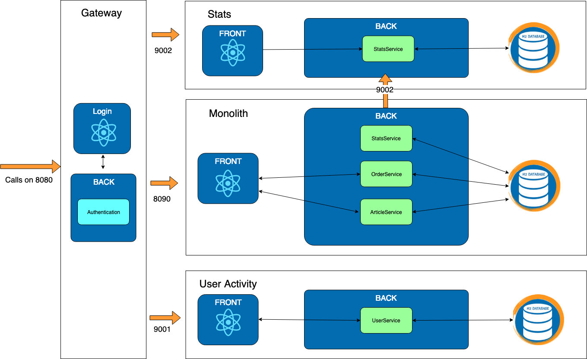

Exercise 3 : Stats
Previously on HOMicS -> Exercise 2: Gateway
Context
In real life, the stats take some time to compute and do not impact the payment workflow. We are going to extract it into a microservice.
 What happens if the microservice is down ?
What happens if the microservice is down ?
All data sent during the down time will be lost.
A simple way to fix this issue is to work with acknowledgment. Let's implement it.
Goal
The monolith will save all the stats in a new table. These stats will be hosted on a new microservice called stats. A scheduled task fetches this table and sends its content to the microservice.
In case of micro-service downtime or errors while processing, the stats will be sent again at the next iteration.
 We implemented the stats microservice. You don't need to work on it in this exercise.
We implemented the stats microservice. You don't need to work on it in this exercise.
In terms of architecture:

At your keyboard
Checkout the branch
git checkout exercise-3
Start the gateway and the two services stats and user-activity:
# gateway
mvn spring-boot:run -pl gateway
# stats
mvn spring-boot:run -pl stats
# user-activity
mvn spring-boot:run -pl user-activity
3 - Monolith
TODO 3.1: StatsService
You need to save an orderPayMessage in the database.
TODO 3.2: StatsTask
Every 10 seconds, the statsService should send the stats. You can use the following annotation:
@Scheduled(fixedRate = 10000)
For more information, visit this link.
TODO 3.3: StatsService
The last implementation on your part is to complete the two methods sendStats and sendStat.
The sendStats() fetches all orderStats in database, then sends them to the microservice using the restTemplate.
You already used restTemplate in exercise 1. If you are lost, check it out again.
This request will be a POST action on the API : http://localhost:9002/stats/api/orders
For the payload, use the class OrderPayedDto.
A response status HttpStatus.OK means the microservice received the information. Then, we remove it from the
database.
TODO 3.4: Clean
Remove the code related to stats that is not required anymore in the monolith.
List of TODOs
3.1 - file com.homics.monolith.service.StatsService
3.2 - file com.homics.monolith.task.StatsTask
3.3 - file com.homics.monolith.service.StatsService
3.4 -
- file com.homics.monolith.service.OrderService
- file com.homics.monolith.controller.dto.OrderStatsDto
Database
You can access the database console via the following url.
Verification and results
To verify that stats is well implemented, launch the gateway, and the monolith applications:
# Run gateway project
mvn spring-boot:run -pl gateway
# Run monolith project
mvn spring-boot:run -pl monolith
Login to the application on the login page. Create two carts and pay for them.
You see a 404 page on the Stats Micro tab. The stats microservice isn't up and running at that point. This behaviour makes sense.
Now, start the microservice Stats:
# Run stats project
mvn spring-boot:run -pl stats
Navigate to the Stats Micro tab. You should see the same page than before with the stats from the previous two orders. All the stats should be retrieved. If you don't see them, refresh few times to let the monolith discuss with the microservice

Great. It works like a charm.
But let's see an other way of doing this.